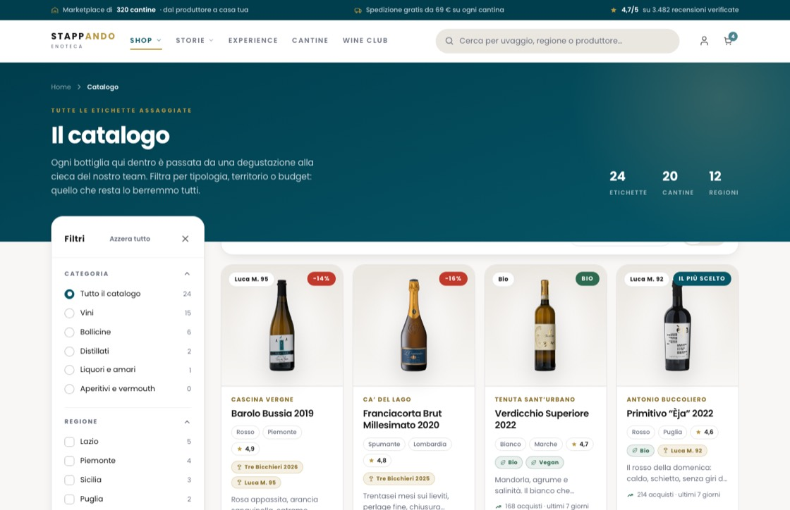
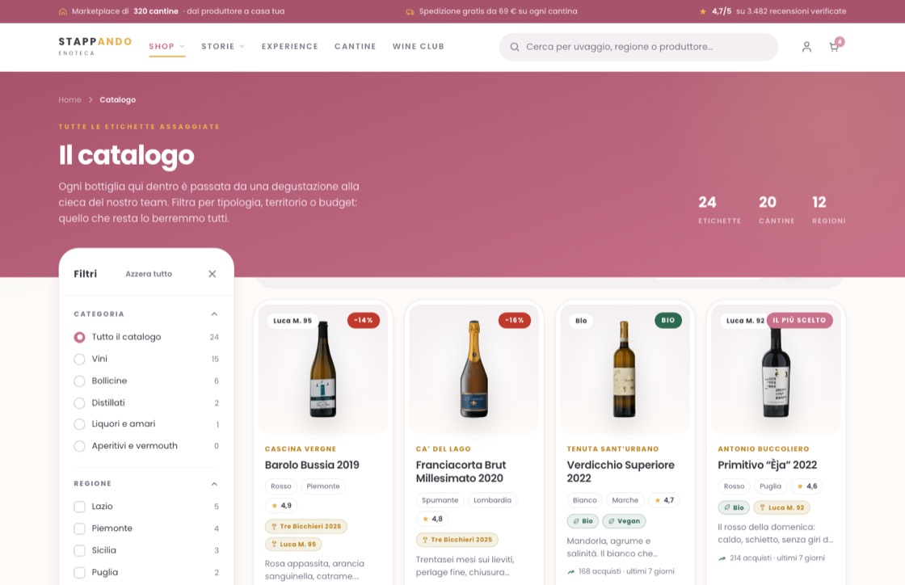
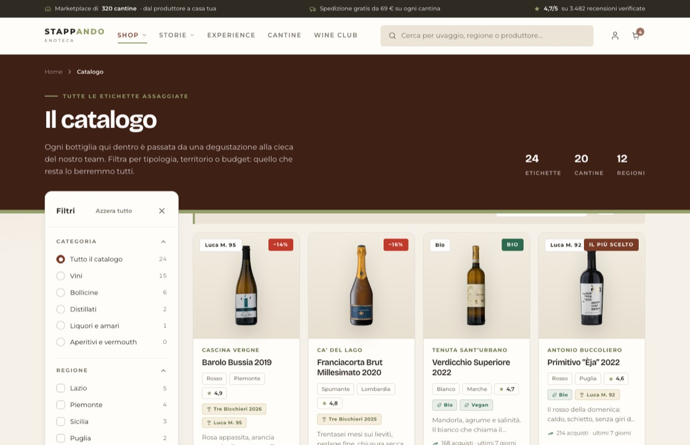
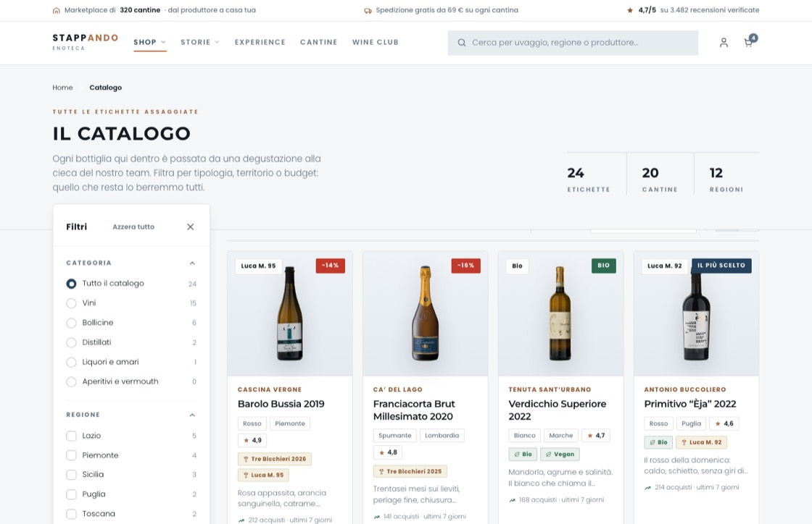
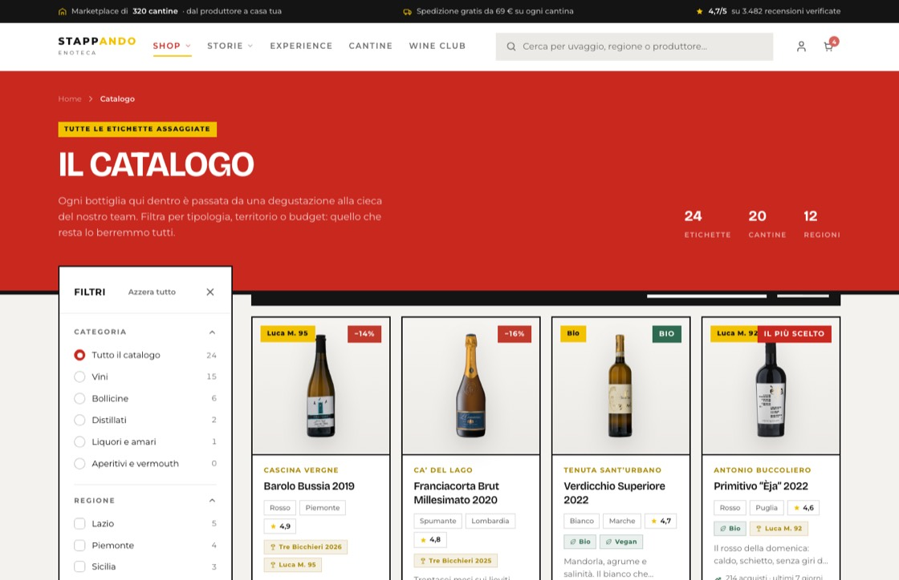
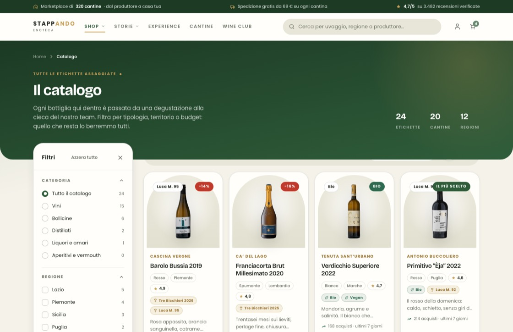
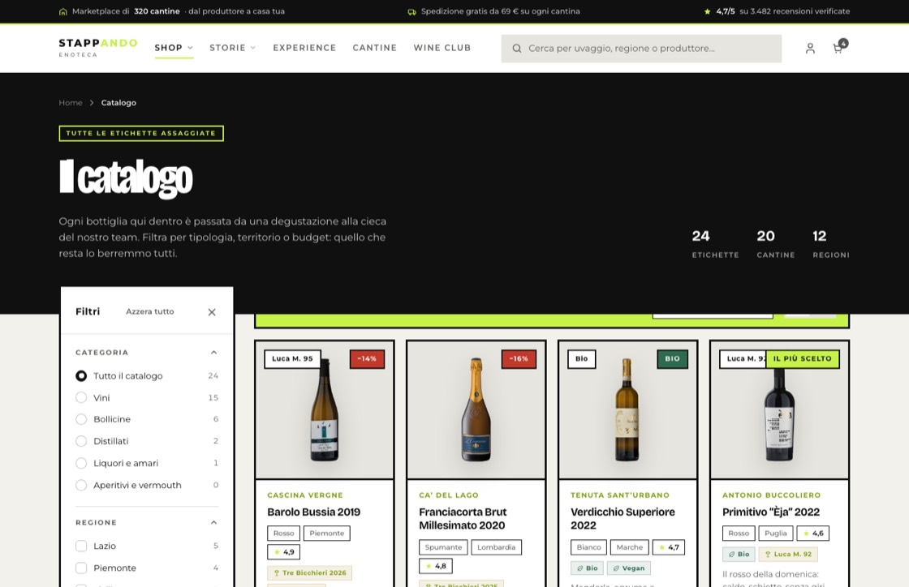

Definitivo · quello di serie
Il petrolio e l'oro di shop.stappando.it con i caratteri più morbidi. Fasce scure in gradiente, angoli tondi, ombre gentili. È il tema che vede chi arriva la prima volta.
Poppins · angoli 14 pxPerché il sito è fatto così: i tre caratteri, i valori condivisi da tutte le pagine, gli otto temi con la loro anteprima, le tre impaginazioni e le regole che non si toccano. Serve a chi disegna e a chi costruisce, per non dover indovinare.
Scegliere cosa bere
Titoli, quando servono personalità e larghezza. È un carattere a larghezza variabile: si può stringere o allargare senza deformarlo. Lo usano Terra, Notte, Mercato, Vigna e Vinile.Scegliere cosa bere
Testo lungo e maiuscoletti spaziati. Regge bene le dimensioni piccole ed è la voce di Terra, Mercato e Vinile; in Nordico fa anche i titoli, in maiuscolo.Scegliere cosa bere
Geometrico e amichevole: è la voce di Definitivo, Pastello, Notte e Vigna. Nei pesi leggeri dà l'aria ariosa di Nordico.Le dimensioni non sono fisse: i titoli si adattano alla larghezza dello schermo, fra un minimo e un massimo. Il testo di lettura resta fra 13 e 15 px con interlinea 1,6–1,8, perché sotto i 13 px in italiano si legge male.
Sono i nomi con cui le pagine chiedono un colore o una misura. Le pagine non sanno di che tema sono vestite: chiedono «il colore principale» e il tema risponde.
| Nome | Cosa comanda | Esempio nel tema di serie |
|---|---|---|
| primary | Colore principale: prezzi, pulsanti pieni, voci attive | Petrolio #005f73 |
| primary-dark | La sua versione scura: fasce, barra di servizio | #003d4d |
| accent | Il secondo colore, usato poco: occhielli, filetti, stelle | Oro #c9a87c |
| bg / card | Fondo della pagina e fondo delle schede | #f7f3ee e bianco |
| fg / muted-fg | Testo principale e testo secondario | #1a1a1a e #7a7060 |
| border / border-soft | Contorni normali e contorni appena accennati | Nero al 9% e al 6% |
| r / r-sm / r-lg | Quanto sono tondi gli angoli: normale, piccolo, grande | 14 / 10 / 20 px |
| shadow-sm / md / lg | Le tre profondità delle ombre | Da appena visibile a staccata |
| font-sans / font-display | Carattere del testo e carattere dei titoli | Poppins e Poppins |
| ok | Il verde delle conferme | #2d6a4f |
Un tema nuovo si fa riscrivendo questi valori. Solo se serve un gesto suo — una fascia piatta, una foto ad arco, un contorno spesso — si aggiungono poche regole in fondo al file.
Ogni anteprima è la stessa pagina catalogo, fotografata con quel tema addosso. Si passa dall'uno all'altro dal selettore in basso, su qualunque pagina.

Il petrolio e l'oro di shop.stappando.it con i caratteri più morbidi. Fasce scure in gradiente, angoli tondi, ombre gentili. È il tema che vede chi arriva la prima volta.
Poppins · angoli 14 px
Rosa antico e salvia su fondo crema. Angoli molto tondi, nessun contrasto duro, la foto sta dentro la scheda con i suoi angoli: la bottiglia resta la cosa più scura della pagina.
Poppins · angoli 22 px
Terracotta, oliva e sabbia: il colore viene dal vigneto, non dal marchio. Fasce a tinta piatta chiuse da un filetto oliva, titoli larghi, occhiello col trattino come nei sommari.
Bricolage + Montserrat · angoli 10 px
L'unico con la fascia chiara invece che scura, con i numeri divisi da righe verticali. Titoli piccoli in maiuscolo spaziato, testo leggero, quasi nessuna ombra. Molta aria, poco colore.
Montserrat + Poppins · angoli 4 px
Fondo carbone, oro col contagocce, testata di vetro sfocato e un alone caldo sotto ogni bottiglia. È l'unico tema scuro: la cosa più illuminata della pagina è l'etichetta. Scheda completa.
Bricolage + Poppins · angoli 10 px
Rosso, nero e giallo da volantino. Titoli maiuscoli fuori misura, occhiello evidenziato, contorni netti e prezzo scritto grande: si capisce in mezzo secondo quanto costa e quanto si risparmia.
Bricolage + Montserrat · angoli 0 px
Verde bosco, crema e ottone. La fascia si chiude con due angoli tondi e la foto della bottiglia sta dentro un arco, come in una nicchia: è la firma del tema, si riconosce da lontano.
Bricolage + Poppins · angoli 20 px
Da copertina di disco: nero pieno, un verde acido, contorni da tre pixel e ombre piene spostate di qualche pixel, come una stampa fuori registro. Titoli enormi e stretti.
Bricolage stretto + Montserrat · angoli 0 pxIl tema dà colori e caratteri, l'impaginazione dà la disposizione: sono due scelte separate e si incrociano, quindi le combinazioni sono ventiquattro.
| Impaginazione | Filtri | Risultati | Quando serve |
|---|---|---|---|
| Standard | Colonna a sinistra, fissa | Griglia da quattro, cinque sugli schermi larghi | È l'impostazione di partenza |
| Vetrina | Barra in alto con le tendine | Poche per riga e grandi, foto più alte | Quando conta guardare, non confrontare |
| Compatto | Colonna stretta | Una riga per bottiglia: foto, dati, prezzo | Quando si confrontano prezzi e premi |
| File | Cosa contiene |
|---|---|
| temi/base.css | Lo scheletro comune: griglia, testate di pagina, bottoni, riquadri, piè di pagina, e le regole per la stampa. |
| temi/header.css · header.js | La testata unica, con le tendine, la ricerca e il menù del telefono. |
| temi/card.css · card.js | La scheda prodotto e le funzioni per griglia e carosello. |
| temi/carrello.css · carrello.js | Il carrello a quattro passi, con il conto delle spedizioni per cantina. |
| temi/prodotti.js | Le 24 etichette di prova: sono l'unica fonte dei dati. |
| temi/skin-*.css | Gli otto temi. |
| temi/layout-*.css | Le impaginazioni Vetrina e Compatto. |
| temi/skin.js | Il selettore in basso: tiene a mente tema e impaginazione mentre navighi. |
Un tema nuovo si aggiunge in tre mosse: copiare un file skin-*.css e riscrivere i valori, aggiungere una riga nell'elenco dentro skin.js, aggiungere la scheda nella galleria dei temi. Nessuna pagina va toccata.